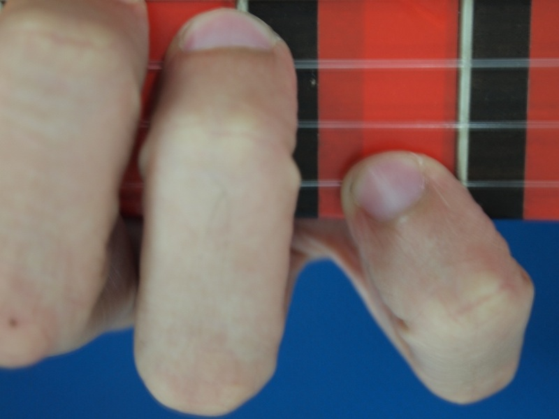
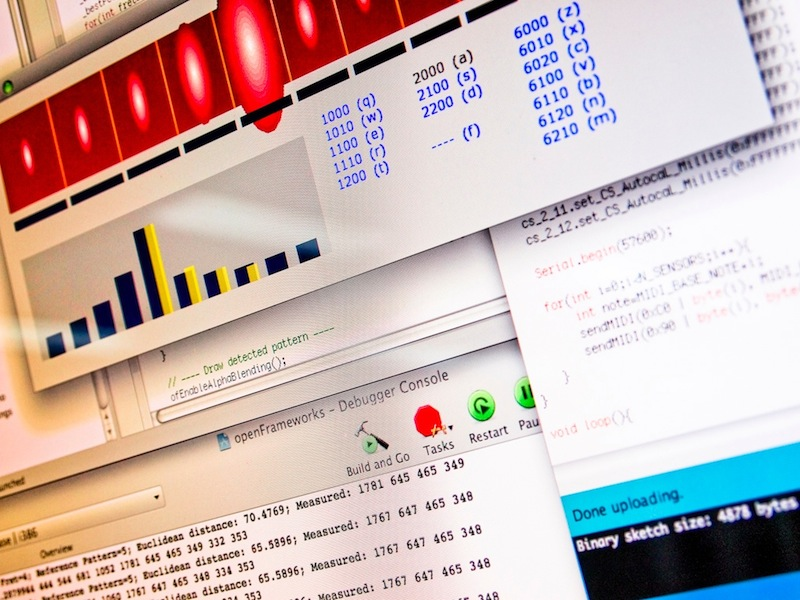

Bridging the semantic gap in Music Computing (see SMC Challenges) with Machine Learning
and focusing on the study of musical expressivity in Nylon Guitars.
 
Our research aims at contributing to the research on Music Computing and on Machine Learning.
Music Computing Challenges
- Study expressiviity by putting together main involved facets: instrument, performer, music genre.
- Model expressiviity by combining partial information from multiple sources (audio, gesture, ...).
- Design tools for realistic usage.
Machine Learning Challeges
- Managing Multimodal input streams.
- Dealing with multi-scale events.
- Combining Knowledge Intensive and Data Intensive methods.
IIIA - CSIC
Campus de la UAB, E-08193 Bellaterra, Catalonia (Spain)
Tel: (+34) 93 580 9570 - Fax: (+34) 93 580 9661
(Map to visit us)